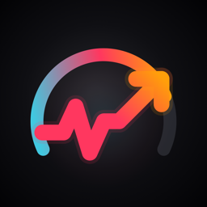

カラダナビ
考えなくていい、毎日の運動プラン
「何を・どれだけ・どこで」運動するかを、アプリが毎日決めます。自分でプランを立てるのが苦手な人、歩くルートを考えるのが面倒な人のための運動アプリです。
動作環境
- iPhone（iOS 27 以降）。Apple Watch がなくても使えます
- Apple Watch（watchOS 27 以降）はあればより便利です（記録・心拍の表示、調子の判定の精度）
よくある質問
Apple Watch がなくても使えますか？
使えます。今日のメニュー、週のプラン、散歩ルート、記録は iPhone だけで使えます。調子の判定は、Apple Watch がない場合、これまでの運動の記録とヘルスケアの睡眠をもとに行います。
無料で使える範囲と、プレミアムの違いは？
無料版では、記録・履歴、3D の種目解説、曜日ごとの基本メニュー、体重のグラフが使えます。プレミアム（日本の価格で月額480円・年額3,800円。初めての方は1か月の無料体験つき）では、調子に合わせた今日のおすすめ、目標から逆算した週のプラン、天気と散歩ルート、雨の日の自動切り替えが使えます。
解約するには？
iPhone の「設定」アプリ → 自分の名前 →「サブスクリプション」→「カラダナビ」から解約できます。無料体験や期間の終了の24時間以上前までに解約すれば、自動更新による料金はかかりません。解約しない限り、自動で更新されます。
機種変更したら、購入は引き継げますか？
同じ Apple ID でサインインし、アプリの「設定」→「購入を復元」を押してください。
健康データはどこかに送られますか？
送りません。健康データは端末の中だけで扱います。天気と散歩ルートのために、現在地だけを Apple のサービス（WeatherKit・マップ）に送ります。広告や解析のツールは入っていません。詳しくはプライバシーポリシーをご覧ください。
ヘルスケアのデータが表示されません
「ヘルスケア」アプリ →（右上の人のアイコン）→「アプリ」→「カラダナビ」で、読み取りを許可してください。アプリの「設定」に「ヘルスケアの追加項目を確認する」が出ている場合は、押して許可してください。
天気や散歩ルートが出ません
プレミアムで、アプリの「設定」の「天気と散歩ルートを使う」がオンになっているか、位置情報が「使用中のみ許可」になっているかを確認してください。
運動してよいか不安です
カラダナビは医療機器ではなく、診断や治療を目的としたものではありません。持病のある方や運動に不安のある方は、始める前に医師にご相談ください。運動中に胸の痛み・めまい・息苦しさなどを感じたら、すぐに中止してください。
お問い合わせ
ご意見・不具合のご報告は、メールでお送りください。
運営者：カラダナビ運営事務局
メール：karadanavi.support@gmail.com
規約とポリシー
最終更新日：2026年9月29日